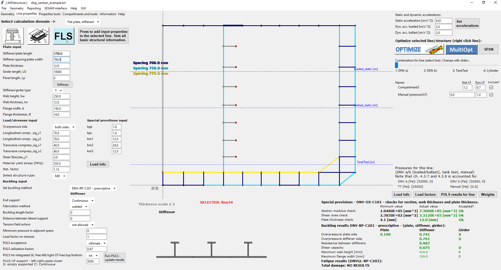

Product 01
ANYstructure
Desktop application for steel structure design. Model plate fields and cylinders, run DNV-based rule calculations, and take the design through to weight, weld and cost optimization in one workflow.
- Plate field and cylinder modeling
- DNV-based rule calculations
- Load definition and reporting
- Weight, weld and cost optimization
